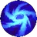
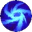
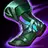
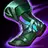
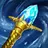
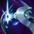
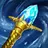
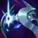

HABILIDADES

ABSORVEALMAS
Morgana absorbe el espíritu de sus enemigos y se cura cuando sus hechizos dañan a campeones, súbditos grandes y monstruos gigantes y medianos.

HECHIZO OSCURO
Morgana atrapa y detiene con magia negra a un enemigo, lo hace experimentar todo el dolor que ha causado y le inflige daño mágico.

SOMBRA ATORMENTADA
Morgana invoca a una sombra maldita en una zona e inflige daño a todos los enemigos que osen caminar sobre su círculo de oscuridad.
Reciben daño mágico prologando que aumenta en función de la vida que les falte.

ESCUDO NEGRO
Morgana escuda a un aliado con una barrera protectora de fuego estelar que absorbe daño mágico e
impide que se apliquen efectos incapacitantes hasta que se haya roto.

GRILLETES DEL ALMA
Morgana desata todo el potencial de su poder celestial, se suelta las alas y flota sobre el suelo.
Lanza cadenas de oscuro dolor hacia los campeones enemigos, lo que le otorga velocidad de movimiento.
Las cadenas ralentizan e infligen daño inicialmente y, tras unos instantes, aturden a todos aquellos que no hayan conseguido liberarse de ellas.


 



 

 


